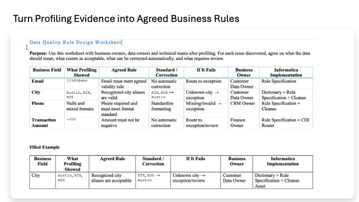

Lab 3
Lab 3 — Agree on the Rules Before Building Them
Decide, with the business, what should count as valid data and which inconsistent values should be standardized. This lab is planning only: no source data changes and no Informatica rule executes yet.
Profile observations
|
v
Business decisions
what is valid? what should be standardized?
|
v
Lab 4A: validation rules
Lab 4B: standardization + routing
Profiling tells us what is present in the data. It does not tell us what the business accepts. Before building technical rules, the business and data team need to agree on questions such as whether blank email is allowed, how phone numbers should be stored, which aliases are recognized, and how future dates or negative amounts should be treated.
The output of Lab 3: an agreed specification of the validation rules, standardization logic, and reference dictionaries that will be built next.
| Building block | What it does | Where it runs |
|---|---|---|
| Rule Specification | Evaluates a value and returns a result such as Valid or Invalid. It does not change the source value. | Attached to a profile in Lab 4A; also reused inside CDI mappings in Lab 4B. |
| Cleanse asset | Transforms a value into the required standard form. | Inside CDI mappings in Lab 4B. |
| Dictionary | Stores approved/standard values and recognized variants used by rules and cleanse logic. | Referenced by Rule Specifications and Cleanse assets. |
| CDI mapping | Reads records, applies transformations, and writes results to targets. | Lab 4B operationalizes the standardization and validation logic. |
A value can be recognized but still not be in the preferred standard form. For example, the city dictionary can recognize both ATX and Austin. The validation rule can therefore say the value is known, while the Cleanse asset still standardizes ATX to Austin.
ATX
|
+--> Validation: recognized value -> Valid
|
+--> Standardization: ATX -> Austin
This is why Lab 4A and Lab 4B use different assets. Lab 4A measures whether data meets the agreed checks. Lab 4B changes selected values into the approved representation and separates records that still fail required validation.
| Problem observed | Agreed check | Asset | Dimension | Expected workshop behavior |
|---|---|---|---|---|
| Malformed email such as 12345@abc | Email must contain the required structural characters used by the workshop rule. | CV1_RS_EMAIL_VALID | Validity | sf-002 fails; Salesforce score expected 3/4 = 75%. |
| Missing phone | Phone must not be null. | CV1_RS_PHONE_REQUIRED | Completeness | sf-003 fails; expected 3/4 = 75%. |
| Phone formatting varies | Reject the formatting characters present in the raw workshop phone values; standard format is produced later by Cleanse. | CV1_RS_PHONE_FORMAT_VALID | Consistency | Raw formatted phones fail according to the tested Lab 4A rule behavior. |
| ATX / AUS aliases | City must be recognized by the city dictionary. | CV1_RS_CITY_VALID | Consistency | Recognized variants can pass; Lab 4B still standardizes them to Austin. |
| Texas / Tex variants | State must be recognized by the state dictionary. | CV1_RS_STATE_VALID | Consistency | Recognized variants can pass; Lab 4B standardizes them to TX. |
| USA / U.S. / United States variants | Country must be recognized by the country dictionary. | CV1_RS_COUNTRY_VALID | Consistency | Recognized variants can pass; Lab 4B standardizes them to US. |
| Future Salesforce purchase date | Date must not be later than the current date/time. | CV1_RS_DATE_NOT_FUTURE | Timeliness | sf-001 fails; expected 3/4 = 75%. |
| Negative transaction amount | Amount must be >= 0. | CV1_RS_AMOUNT_NON_NEGATIVE | Validity | TXN-10002 fails; expected 4/5 = 80%. |
| Future transaction date | Transaction date must not be later than current date/time. | CV1_RS_DATE_NOT_FUTURE | Timeliness | TXN-10004 fails; expected 4/5 = 80%. |
About dictionary rules: the tested Lab 4A 'in dictionary:' operator checks both the standard and variant columns. Therefore ATX, Texas, or USA can be recognized as valid while still requiring standardization in Lab 4B.
| Problem | Required change | Cleanse asset |
|---|---|---|
| Phone punctuation and spaces | Remove the non-digit formatting characters used by the workshop data. Example: (555) 0198 → 5550198. | CV1_CL_PHONE_NORMALIZE |
| City aliases | Use the city dictionary to replace aliases with the approved city. Example: ATX / AUS → Austin. | CV1_CL_CITY_STANDARDIZE |
| State variants | Use the state dictionary to replace variants with the approved code. Example: Texas → TX. | CV1_CL_STATE_STANDARDIZE |
| Country variants | Use the country dictionary to replace variants with the approved code. Example: USA → US. | CV1_CL_COUNTRY_STANDARDIZE |
Each dictionary has a standard_value column and a raw_value/variant column. Rule Specifications use the dictionary to recognize values; Cleanse assets use it to replace a variant with the standard value.
| Dictionary | Standard examples | Variant examples |
|---|---|---|
| CV1_DICT_STATE | TX, ON, CA, NY | Texas, Tex, Ontario, Ont |
| CV1_DICT_COUNTRY | US, CA, UK | USA, United States, U.S., Canada |
| CV1_DICT_CITY | Austin, Houston | ATX, AUS, HOU |
Saved definition
Rule Specification / Cleanse / Dictionary
|
v
Execution context
Profile task or CDI mapping
|
v
Actual result
Scorecard or standardized output
Creating an asset saves its definition. The asset affects data only when an executing task uses it. A Rule Specification attached to a profile produces pass/fail results when the profile runs. A Cleanse asset inside a CDI mapping changes values when the mapping runs. A Dictionary is referenced by those assets.
Lab 4A creates the three dictionaries and eight Rule Specifications. Seven Salesforce-relevant rules are attached to the Salesforce profile and the profile is re-run to produce measured pass/fail counts. The transaction rules can also be applied to the Databricks transaction profile.
Lab 4B creates the four Cleanse assets and two CDI mappings. The mappings standardize selected values, re-apply required Rule Specifications, route valid records to staging tables, and route failing records to exception tables. The original sources remain unchanged.
Decide the standards
|
v
Measure against them (Lab 4A)
|
v
Apply them to create standardized outputs (Lab 4B)

Profiling gives us evidence; this worksheet turns that evidence into decisions. For each issue, business and technical owners agree what counts as valid, what can be corrected automatically, what should happen when a record fails, who owns the decision, and which Informatica capability will eventually implement it. No data is changed in this lab.
• The validation checks above make sense for the workshop data.
• You understand which issues are measured, which are standardized, and which require both.
• You understand that recognized dictionary variants can pass validation even before they are standardized.
• No data was modified.
Lab 4A turns these decisions into actual Informatica dictionaries and Rule Specifications and attaches the rules to the profile to produce the first scorecard.
Cloud Data Integration (CDI) is Informatica's service for moving and transforming data. A mapping reads from a source, passes each record through configured transformations, and writes the result to a target.
In Lab 4B, CDI is the execution pipeline that carries the data-quality work: Cleanse transformations standardize values, Rule Specification transformations produce validation verdicts, and a Router sends valid and failing rows to separate Databricks tables.
Trusted Data Foundation Workshop